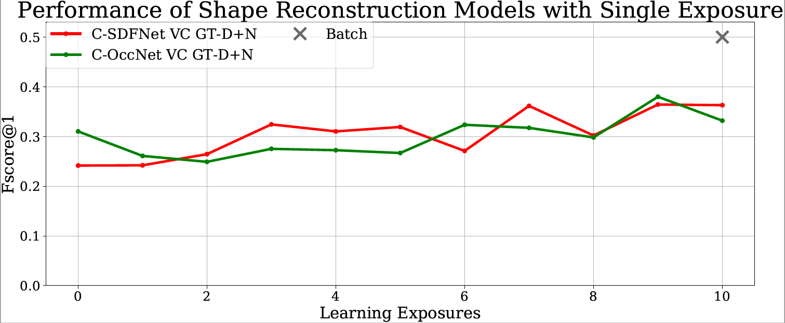
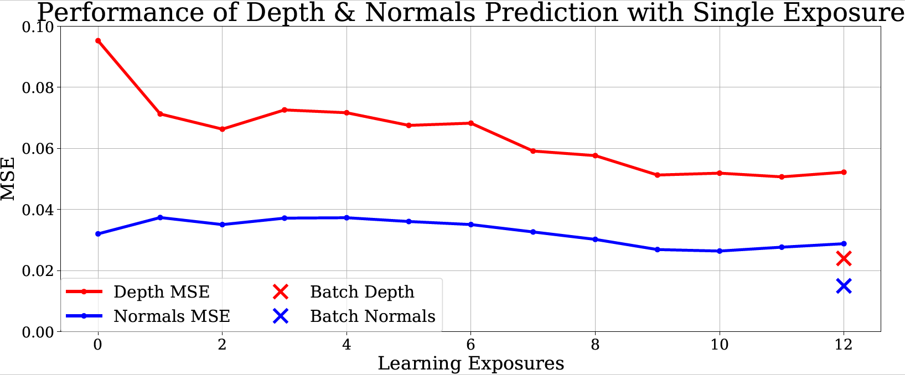
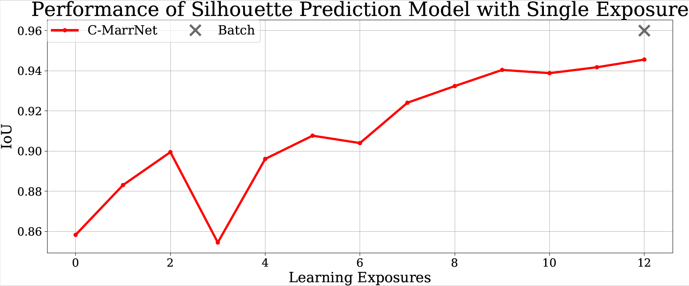
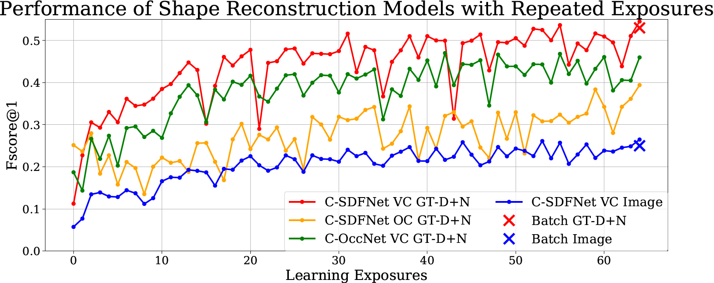
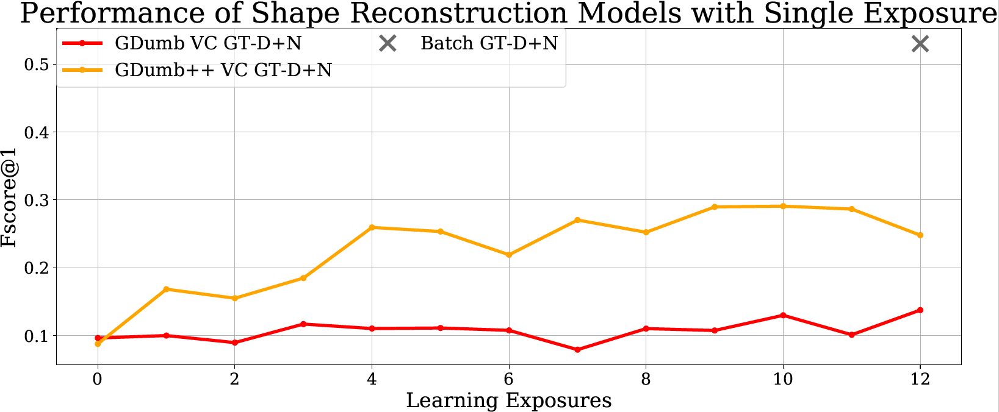
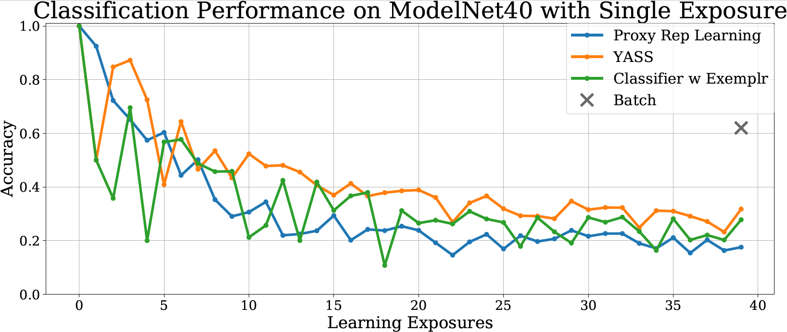
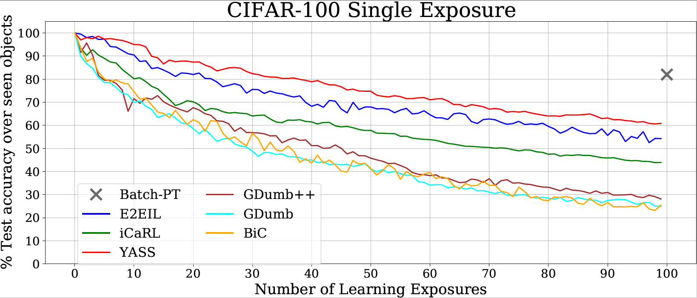
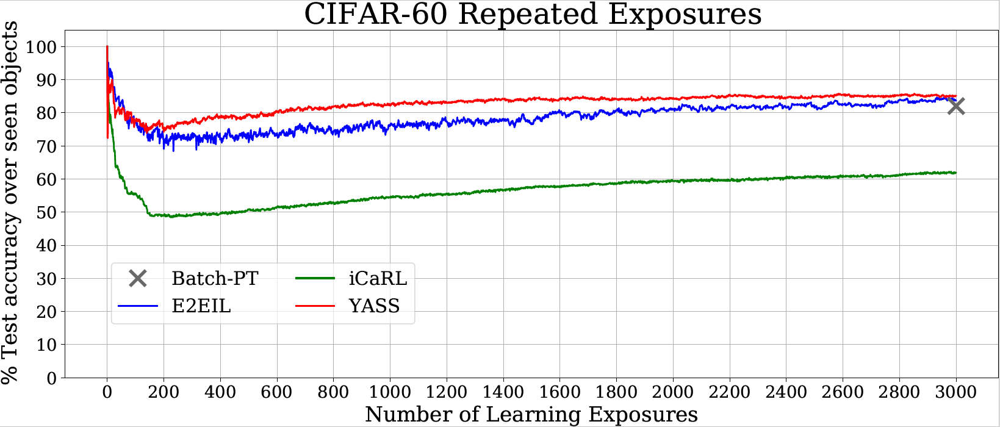
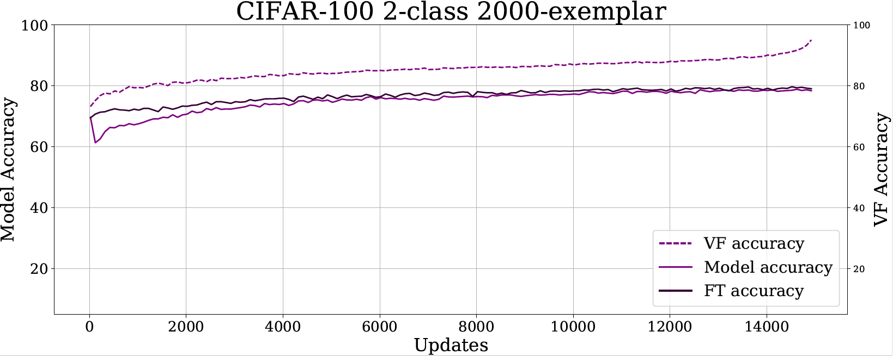
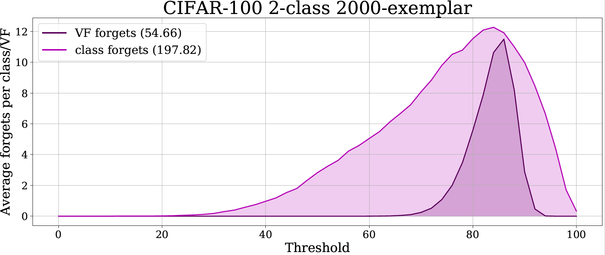

We demonstrate that, unlike classification task, reconstruction tasks do not suffer from catastrophic forgetting when learning continually. The reconstruction algorithm used is standard SGD run on each learning exposure. We do not need to utilize additional losses, external memory, or other methodsto achieve good continual learning performance. Average accuracy on seen classes is shown at each learning exposure in the following plots.

3D Shape Reconstruction

Surface Depth and Normals Prediction

Silhouette Prediction
Reconstruction tasks do not suffer from catastrophic forgetting in single exposure case.

Repeated exposures lead asymptotically to batch performance.
Representation Positive Transfer in Reconstruction Tasks
We demonstrate that, unlike classification task, 3D shape reconstruction task is able to propagate the learned feature representation forward between learning exposures (referred to as positive forward transfer), which is presumably one of the keys to the success of reconstruction tasks. In the following experiment, we utilize GDumb [1] and a variant of GDumb, GDumb++, which differs from GDumb in that the model trained at each exposure is initialized with the weights learned in the previous exposure (ie. not starting from scratch). Since both GDumb and GDumb++ are trained on the same amount of input data, any performance gap is attributable to the value of propagating the learned representation.

For 3D reconstruction task, GDumb++ shows a significant advantage over GDumb.
Proxy Task for Continual Classification
We utilize the learned feature representation extracted from a continual 3D shape reconstruction and apply nearest-class-mean (NCM) to perform classification. We maintain an exemplar set of 20 images/class with
class labels randomly chosen from the training set at each learning exposure. The performance of this proxy task is on par with the SOTA classification algorithm with the same exemplar set size.

Classification performance on ShapeNet13

Classification performance on ModelNet40
Performance of the shape proxy task and classification methods.
YASS—Simple Baseline for Classification
We introduce YASS, a class incremental learning method that is a simple extension of a batch learner with standard SGD and data balancing technique. We demonstrate that this simple design choice surprisingly achieves SOTA performance.

Single exposure learning on CIFAR-100

Repeated exposures learning on CIFAR-100
DyRT—A Novel Tool To Quantify Forgetting
We introduce DyRT (Dynamic Representation Tracking), a novel tool to quantify the dynamics of forgetting in the visual feature representation during
continual learning. With DyRT, we demonstrate that the FC layer is more prone to forgetting than the feature extractor, confirming the findings from prior works.

Accuracy of the feature representation (VF) and Model accuracy (using readouts from the FC layer)

Number of times a particular class or VF is
forgotten during training plotted by the threshold used to aggregate that data point
Citation
Bibliography information of this work:
Thai, A., Stojanov, S., Rehg, I., Rehg, J. (2020). Does Continual Learning = Catastrophic Forgetting?
Reference
- Ameya Prabhu, Philip Torr, and Puneet Dokania. Gdumb: A simple approach that questions our progress in continuallearning. In ECCV, 2020.